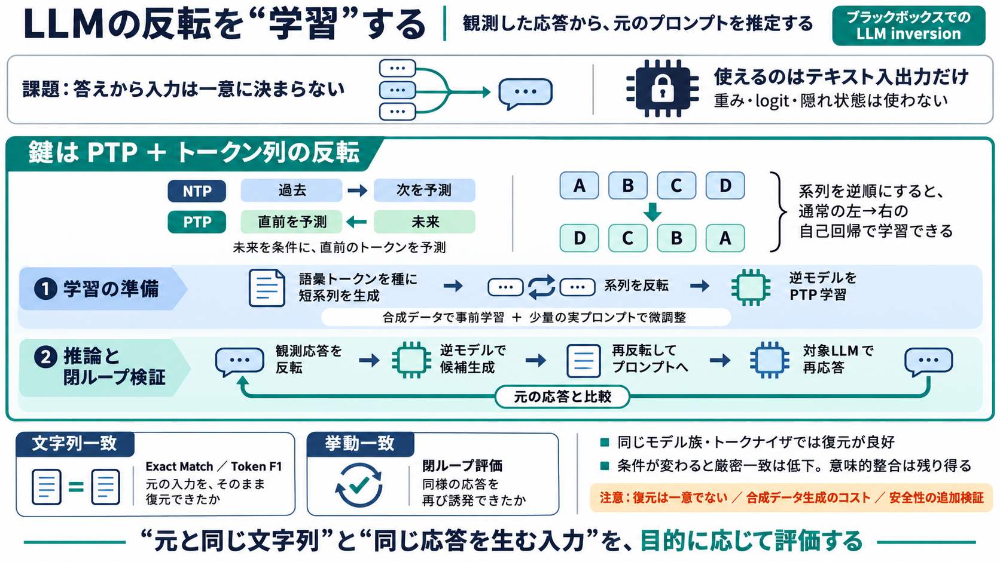

PTP: Previous-Token Prediction based LLM InversionforNear-Exact Prompt Reconstruction
Next, we evaluate prompt reconstruction across models with differing architectures and vocabularies. Specifically, we co…

LLMの反転を“学習”する
観測されたLLM応答から、元の入力プロンプトを推定（復元）する技術、LLM inversionを、ブラックボックス条件で成立させる新手法の全体像です。
逆算の難しさ
通常のLLMは入力から次トークンを予測し、入力→出力が基本です。反転は逆に、出力から入力を当てるため、1対1になりにくく数学的に難しくなります。
同じ応答を誘発する入力は複数あり得る（厳密な復元は不可能になりがち）。
logit・重み・隠れ状態・埋め込みにアクセスできず、テキスト入出力のみで推定する必要。
順番を“反転学習”
NTP（next-token prediction）の逆として、PTP（previous-token prediction）を学習目標に置きます。未来（反転後の文脈）から直前トークンを予測する形です（Prev→Next を逆方向化）。
過去条件でnextを予測。
未来条件でpreviousを予測。
系列を逆順にして「通常の自己回帰」に合わせる。
系列を反転して適合
左から右の生成に最適化されがちな実装では、そのままではPTPが学習しづらくなります。そこでトークン列を逆順に反転し、反転後は「通常の左→右自己回帰」の学習フレームに落とし込みます。
対象LLMの応答系列をトークン化 → 逆順に並べ替え。
反転系列上で「前（=元の未来）」から「過去トークン」を予測。
合成データで下準備
ブラックボックス反転では内部情報が使えないため、学習の土台が重要です。そこで、語彙中の各トークンを種にして短い系列を生成し、その系列を反転したデータで逆モデルを事前学習します。
各語彙トークン → 対象LLMで短系列生成 → 反転系列でPTP学習。
合成データ（合成系列）/ Synthetic data少量の実プロンプト群を使い、対象LLMの応答と合わせて反転系列を作り微調整。
少量データ / Low-shot tuning閉ループで検証
推論では、観測した応答をトークン化して逆順にし、逆モデルで逆順プロンプト候補を生成します。最後に再反転して元順に戻し、順方向の対象LLMで再応答を生成、閉ループ評価で誘発性を確かめます。
観測応答 → トークン化 → 逆順。
逆モデルで候補プロンプト（逆順）生成。
順方向LLMで再応答 → 応答一致で評価。
精度は条件に依存
同一モデル族・同一トークナイザ条件では、Qwen3-0.6B Chat（例）に対するプロンプト再構成で、Exact MatchやToken F1が高いと報告されています。モデル族が変わると厳密一致は落ちますが、意味的整合は残る傾向があります。
Exact Match / Token F1が高い（良好な文字列復元）。
文字列一致は低下しつつ、意味的整合は一定（用途で解釈が変わる）。
従来との差
従来は、出力と意味的に近い入力を作る方向や、内部表現/logitに依存する方向が多い傾向があります。本手法はlogitや重みへアクセスせず、テキスト入出力だけから逆モデルを学習するのが柱です。
意味的に近い入力を生成する。
内部(logit/表現)に依存。
出力→逆生成を学習（PTP+反転+閉ループ）。
指標の意味が重要
評価は「文字列一致」か「同様の応答（挙動）を誘発」かで意味が変わります。本研究はExact Match/Token F1に加えて閉ループ評価も扱うため、用途に応じた解釈がしやすい設計です。
Exact Match・Token F1：復元が“そのまま”であることを重視。
閉ループ評価：再誘発される応答（同種の生成挙動）を重視。
強みと注意
最大の強みは、PTPという明快な学習目標を系列反転で実装可能にし、ブラックボックス制約に合わせて閉ループ評価で価値を担保しようとしている点です。一方で、前提条件（同一トークナイザ等）や計算コスト、評価軸の取り違えには注意が必要です。
学習目的がはっきり／内部依存を避ける／閉ループで品質を検証。
厳密一致は条件依存／合成生成コストが重い可能性／安全性評価の追加検証が必要。
誤解を減らす
「復元＝1対1」は多くの場合成り立ちません。さらにPTPは単純なNTP反転ではなく、トークン列反転と組み合わせて“未来→過去”を予測する学習として成立します。
いいえ。同じ応答の誘発は複数入力があり得る。
関連はあるが、PTPは“未来条件で直前を予測”。
入力（種など）→対象LLMの出力を観測し、遷移傾向を学習。
まとめ
PTP＋系列反転で“ブラックボックス反転”の学習を成立させ、合成データ＋閉ループ評価で実用的な再構成を狙う。重要なのは、文字列一致と挙動一致を、目的に合わせて評価することです。
例：Qwen3-0.6B ChatでのExact Match/Token F1が報告され、モデル・トークナイザ非一致では厳密一致が落ちるが意味的整合は残り得る。
Next, we evaluate prompt reconstruction across models with differing architectures and vocabularies. Specifically, we co…
semantically plausible prompts. In contrast, we present a functional approach to inverting a given LLM in a black-box se…
[0:45] Below that, the proposed inverse model runs in reverse, taking an observed response to predict the preceding prom…
[0:48] This requires no real data, just query access to the forward model. On quen 3 chat, PTP achieves 64.77% [0:56] ex…
In this paper, we propose a novel language model inversion technique, reverse prompt engineering (RPE), which assumes th…